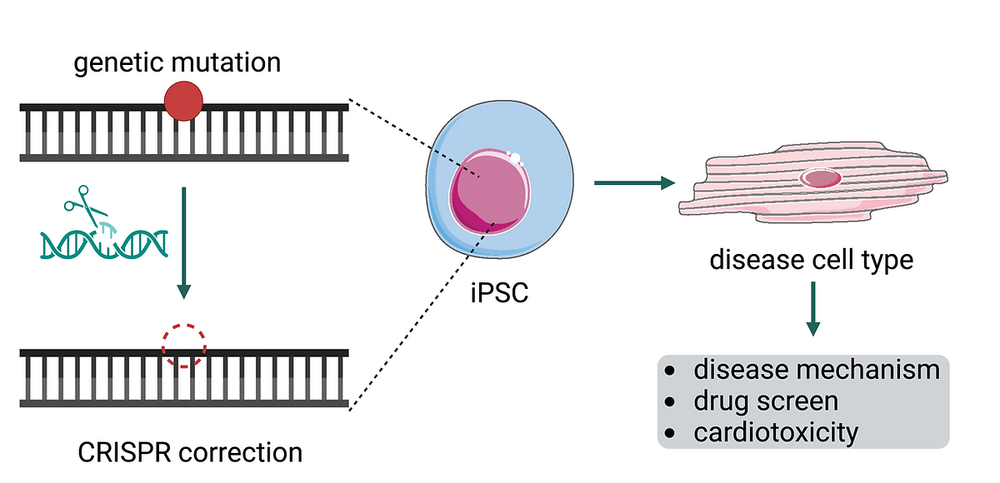

Disease Modeling

Induced pluripotent stem cells (iPSCs) are used to model heart diseases by turning them into heart tissue that mimics patient-specific conditions. CRISPR technology allows for targeted genetic edits in these iPSCs to study the role of specific genes in heart diseases. After editing, the iPSCs are differentiated into heart cells to observe the effects. This method is invaluable for understanding disease mechanisms and testing new treatments. In the emerging field of cardio-oncology, iPSCs also help us understand how cancer drugs impact heart health, aiming to balance effective cancer treatment with minimized cardiac risks.